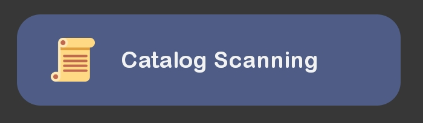
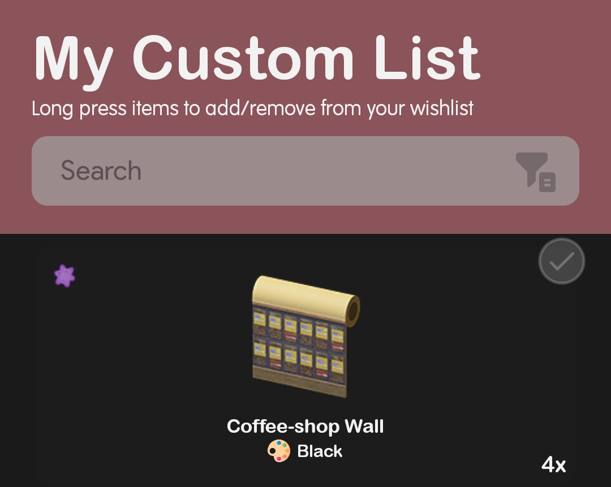
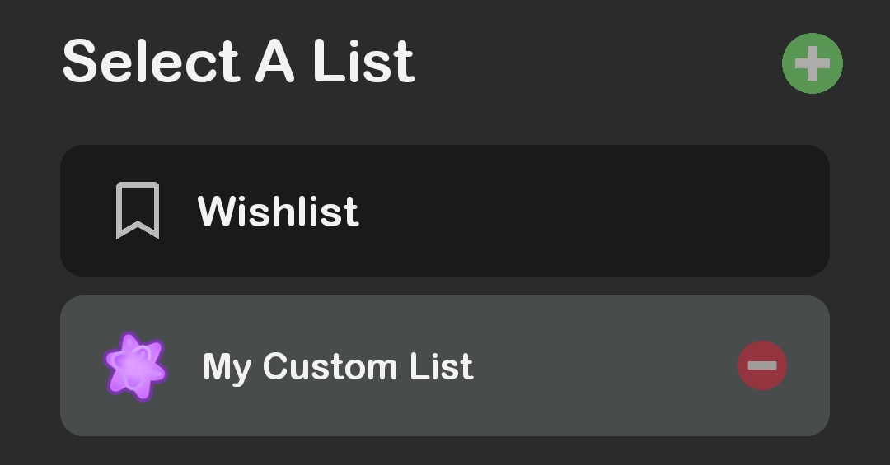
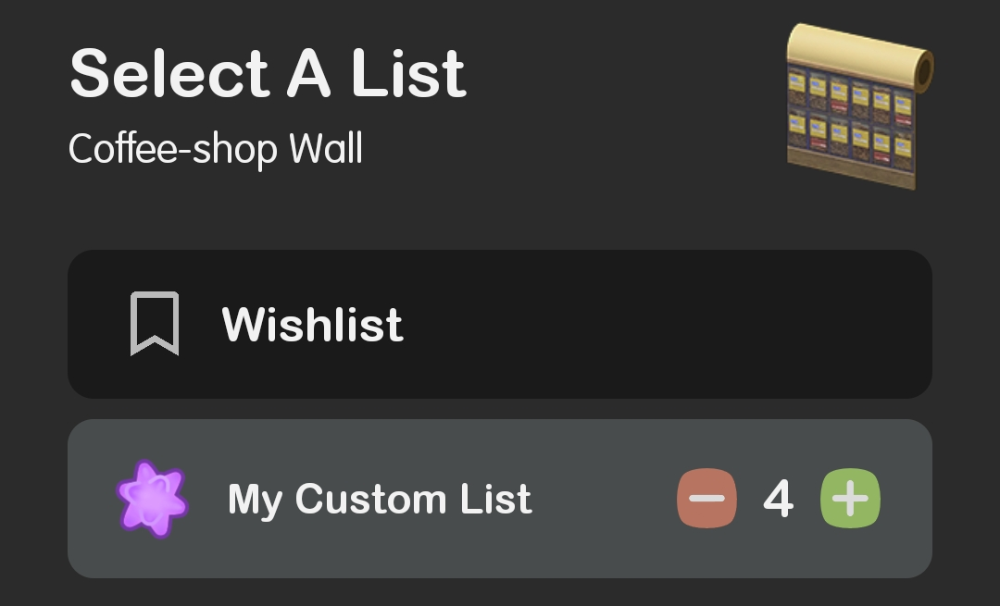
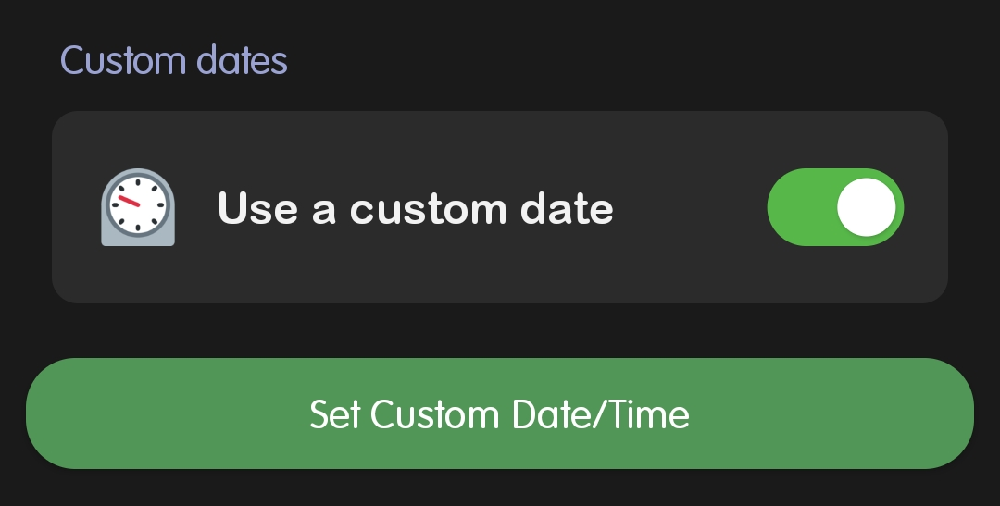
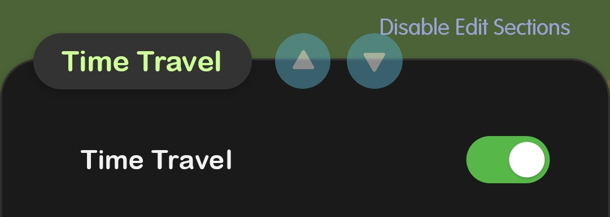
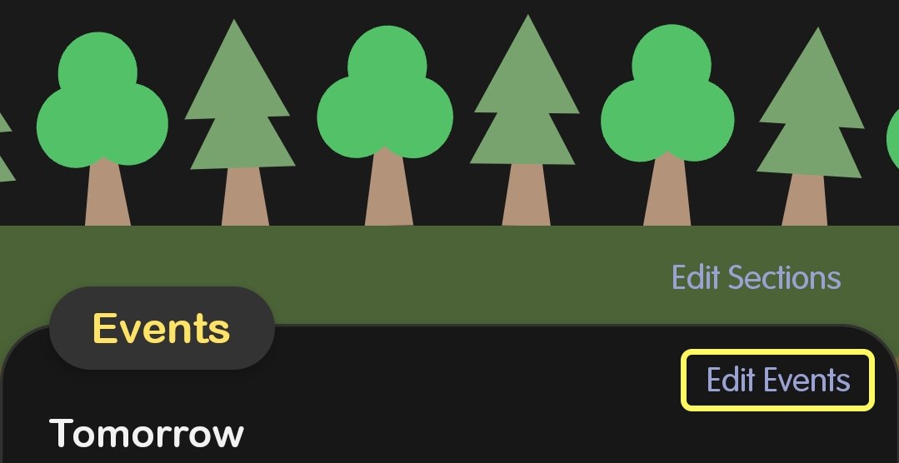
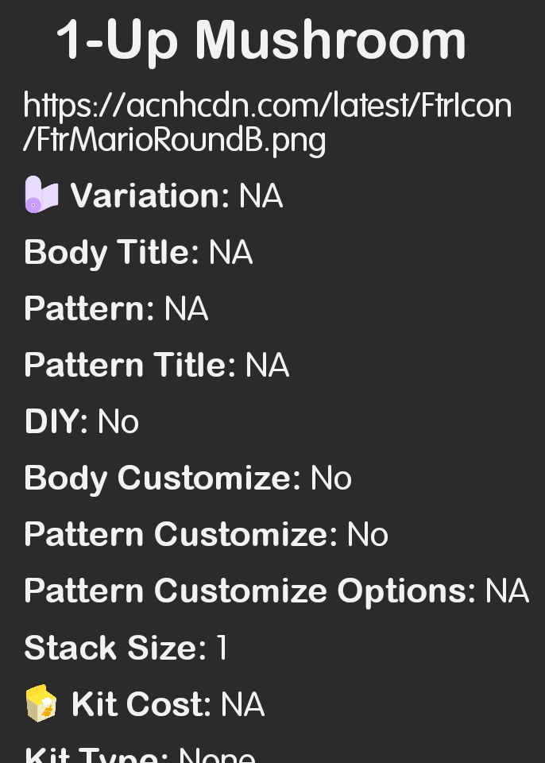
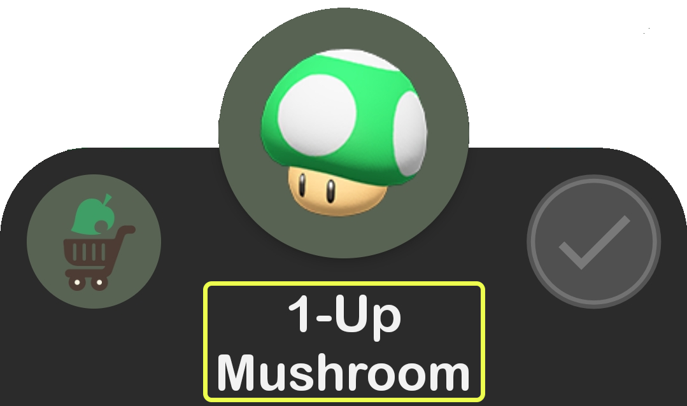

You can always email me and I'll be glad to help you out!
dapperappdeveloper@gmail.com
How we collect data and how we use your data
You can read the privacy policy here. In short, we don’t and never will! This is a free app for all to use and help users through their ACNH journey :)
How to sync my collection with my game?
You can use the Catalog Scanner for ACNH Pocket Guide app to automatically scan your catalog. All the information can be found on the Catalog Scanner page within ACNH Pocket Guide.
Alternatively, within the Catalog Scanner page there is integration with nook.lol.
However, since this application is not affiliated with ACNH, there is no way to sync your data from the game directly.
How to use custom lists?
Custom lists offer a flexible way to organize your items based on your preferences and track their quantities. By creating custom lists, you can categorize and manage your inventory with ease.
To use custom lists, head to the [Wishlist] page and tap the green list button in the bottom right corner. Then click the green [+] to add a new list.
Simply long-press any item entry that is not in your Wishlist page and select the relevant list to add it to. You can even set the item quantities for each list separately.
To view items in that list, tap the green list button in the bottom right corner and select the list you want to view.
Tip: If you frequently add items to a specific list, you can set it as your default list in the [Default wishlist] setting on the settings page. This way, you can quickly add items to your go-to list without any hassle.
  I'm a time traveler, how do I change the time in the app?
If you choose to travel the waves of time, you can sync this app to the game's clock without changing your phone's clock. At the bottom of the Settings page you can enable and select the date and time. This time within the application will update as real time passes. For easy access you can add these options to your home page if you time travel frequently. (Tap [Edit Sections] on the home page, or [Edit home page] in the settings, and enable [Time Travel])
 How do I configure my notification preferences?
On the home page, under the events section tap Edit Events in the top right. You can also go to Settings and tap Edit event notifications. Here you can edit the events you want to be shown and receive notifications for. You can also change the time notifications come in!
How do I find information about game-play mechanics and learn some tips and tricks?
On the Guide + FAQ page, we have integrated the ACNH FAQ website with permission from the amazing writers. You can also find the website here!
I have multiple islands, how do I manage them?
By using the Profiles/Islands page you can switch profiles that contains a completely separate collection and hemisphere. You can also set the date and time if it differs from your main island!

I want to see the weather forecast on my homepage
Unfortunately the developers of this application were unable to fully integrate the weather tracking from MeteoNook into this application. There is a separate page where you can quickly view the weather forecast from the official website.

How do I backup or restore my data?
There are many ways to backup your data on the Backup + Restore page. The cloud backup is recommended, however you can also backup to your Files, Clipboard, or export all of your Data (recommended when switching phones).
How do I see more information about an item?
By tapping the items name in the popup you can view the raw data associated with that item.
 Why are there so many buttons on villager entries?
Starting in the top left corner is an indication of whether you collected that villager's photo yet. You can also filter villager's who have collected/uncollected photos.
The bottom left cabin is the indication of whether you have completed that villagers Paradise Planning (DLC) request.
The bottom left moving boxes indicates whether you had this villager once before and is no longer a part of your town.
The heart is to indicate this is a favorite villager/currently living in your town. It will show up on your profile within the app.